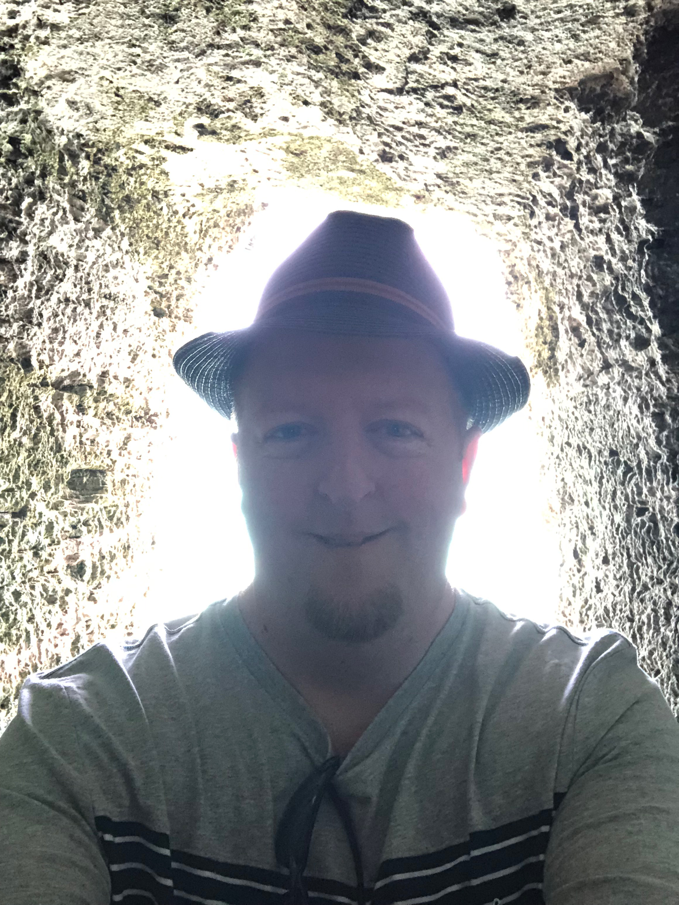

Steven Nesbitt
About Steve
Steve, now 46 years old, was born and raised in Long Island, New York. He grew up in Farmingdale, NY in early years and later on lived in Franklin Square, NY. He currently is a Senior Systems Analyst for a company named Flight Safety International. His hobbies include photography, video gaming, and vacationing. He is also a music collector as he has a large collection of over 2,000 CDs. His favorite spots to take pictures are Bermuda and New York City. And since he is a systems analyst, he is also good with computers.
Collector
Steve is an avid music collector. He has a large collection of CDs. His favorite music is heavy metal. This collection consists of mostly heavy metal and some rock music. He has digitized each and every CD and song in his collection so that he can listen to the music on the go. He also enjoys going to heavy metal concerts as well.

Gamer
Steve is an avid gamer as well. When he is not working, he is also playing video games. Steve's friends are also gamers who also travel around the metro area playing video games in tournaments. These tournaments consist mainly of games like Street Fighter and Mortal Kombat. On of his friends named LI Joe recently appeared on a televised gaming match and won the tournament. Steve likes to also go to tournaments of course and watch his friends play.
Freelance Photographer
Steve is also a freelance photographer. His favorite subjects of photography are vacation spots, skylines, old structures, and sunsets. Below are some images that he has captured.